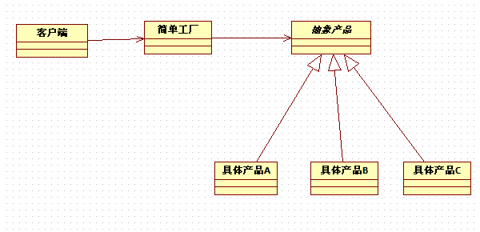
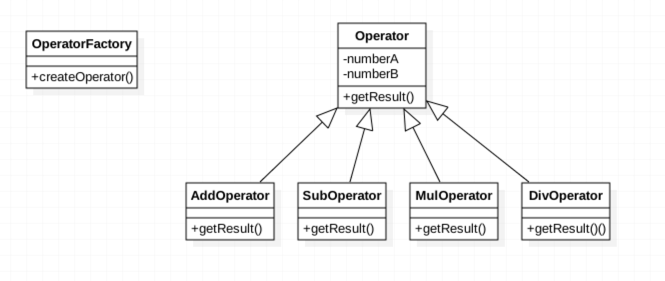
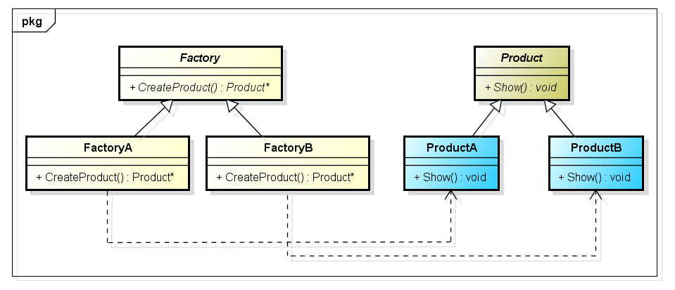
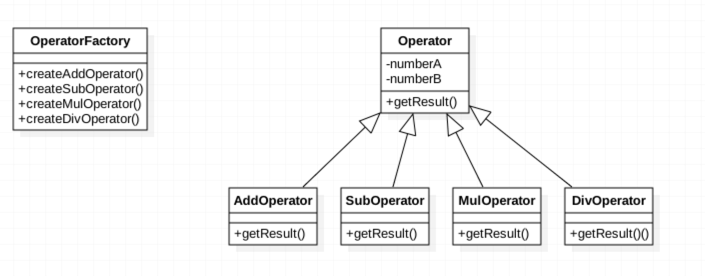
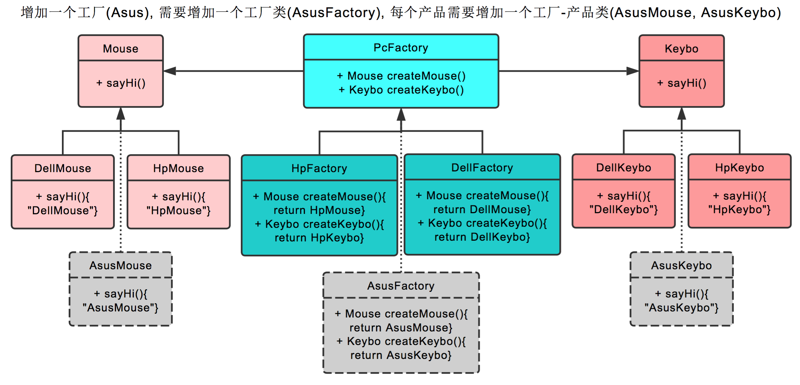
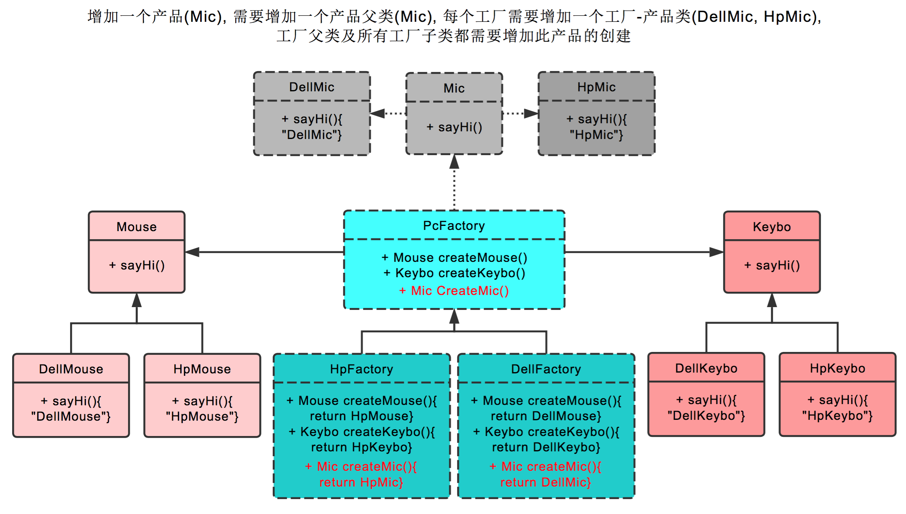

创建型设计模式中的工厂模式可以细分为三种：分别是简单工厂模式、工厂方法模式、抽象工厂模式。
我们可以通过一个小例子更加形象的理解工厂上述三种模式。
（1）还没有工厂时代：假若还没有工业革命，如果客户想要一辆宝马车，一般的做法是他自己去创建一辆宝马车，然后拿来用。
（2）简单工厂模式：后来出现工业革命，客户不再自己创建宝马车，而是通过一个宝马工厂来帮他创建宝马车，比如想要320i系列车，工厂就可以创建这个系列的车，即工厂可以创建产品。
（3）工厂方法模式：为了满足客户需求，宝马车系列越来越多，如320i、523i、30li等系列一个工厂无法创建所有的宝马系列，于是单独分出来多个具体的工厂。每个具体的工厂创建一种系列。即具体工厂类只能创建一个具体的产品。但是宝马工厂还是抽象，你需要指定某个具体的工厂才能生产出车来。
（4）抽象工厂模式：随着客户的要求越来越高，宝马车必须配置空调，于是这个工厂开始生产宝马车和需要的空调。最终是客户只要对宝马的销售员说：我要523i空调车，销售员就直接给他523i空调车了。而不用自己去创建523i空调车宝马车。
这就是工厂模式。
下面一一讲解：
1、简单工厂模式
定义：在创建一个对象时不向客户暴露内部细节，并提供一个创建对象的通用接口。
简单工厂模式属于类的创建型模式，又叫做静态工厂模式。通过专门定义一个工厂类来负责创建其它类的实例，被创建的实例通常都具有共同的父类。需要注意的是，简单工厂模式不属于23种GOF设计模式之一。
简单工厂模式是由一个工厂对象决定创建出哪一种产品类的实例，简单工厂模式是工厂模式家族种最简单实用的模式，可以理解为是不同工厂模式的一个特殊实现。
简单工厂模式包含三种角色：
（1）工厂角色（Creator）
这是简单工厂模式的核心，它用来负责创建所有实例的内部逻辑。工厂类可以被外界直接调用，创建所需的产品对象。
（2）抽象角色（Product）
这是简单工厂模式所创建的所有对象的父类，它负责描述所有实例所共有的公共接口。该类可以是接口，也可以是抽象类。
（3）具体产品角色（Concrete Product）

简单工厂模式所创建的具体的实例对象。

以上面的UML为例，表示的是一个用简单工厂方法模式实现的加减乘除计算器程序。
其中Operator是一个抽象类，其中包含属性numberA及numberB，以及一个getResult( )方法用于返回计算结果。它的角色就是抽象角色（Product）。
下面的AddOperator、SubOperator、MulOperator、DivOperator是Operator的子类，分别代表加减乘除四种运算，他们的角色是具体产品角色（Concrete Peoduct）。
OperatorFactory是工厂类，其中的createOperator( )方法用于创建计算器对象。
1 | /** |
1 | /* |
1 | /* |
1 | /* |
1 | /* |
1 | /** |
1 | /** |
延伸：试想一下，当我们在coding的时候，如果在A类里面new了一个B类的对象，那么A类在某种程度上说就是依赖于B类。如果在后期开发的时候需求变化或者是维护的时候，需要修改B类的时候，我们就需要打开源代码修改所有与这个类有关的类了，做过重构的朋友就知道，这样的事情虽然无法避免，但是确实是一件让人心碎的事情。
通过以上分析，我们可以得出简单工厂模式的优缺点：
- 在简单工厂模式中，工厂类是整个模式的关键，它包含了必要的逻辑判断，能够根据外界给定的条件去判断应该创建哪个具体类的实例，用户使用时可以直接根据工厂类去创建所需的实例，而无需关心这些对象是如何组织并创建的，从这一点来说，这有利于整个软件体系结构的优化。
- 但是，简单工厂模式的缺点也正体现在工厂类上，由于工厂类集中了所有实例的创建逻辑，当我们增加一个新的具体类时，需要同时修改工厂类（多加几个if判断），这违反了”开闭原则“。
2、工厂方法模式
定义：定义了一个创建对象的接口，但由子类决定要实例化哪个类。工厂方法把实例化操作推迟到子类。
工厂方法模式又称多态性工厂模式，是对普通工厂方法模式的改进，在工厂方法模式中，核心的工厂类不再负责所有产品的创建，而是将具体创建的工作交给子类去做。该核心类成为一个抽象工厂角色，仅负责给出具体工厂子类必须实现的接口，而不接触哪一个产品类应当被实例化这种细节。
在简单工厂中，创建对象的是另一个类，而在工厂方法中，是由子类来创建对象。

依旧以上面计算器为例：

我们对OperatorFactory类更改如下：
1 | public class OperatorFactory { |
此时不会出现简单工厂模式中因为字符串传错而不能正常创建对象的问题。
1 | public class OperatorTest { |
总结：与简单工厂模式相比，工厂方法模式避免了因为传入字符串错误而导致无法正常创建对象的问题，并且由于多态的存在，客户端代码可以做到与特定应用无关，适用于任何实体类。缺点是每次增加一个产品时，都需要增加一个具体产品类和对象实现工厂，使得系统中类的个数成倍增加，在一定程度上增加了系统的复杂度，同时也增加了系统具体类的依赖。这并不是什么好事。
3、抽象工厂模式
定义：提供一个接口，用于创建 相关的对象家族 。
抽象工厂模式创建的是对象家族，也就是很多对象而不是一个对象，并且这些对象是相关的，也就是说必须一起创建出来。而工厂方法模式只是用于创建一个对象，这和抽象工厂模式有很大不同。
抽象工厂模式用到了工厂方法模式来创建单一对象，AbstractFactory 中的 createProductA() 和 createProductB() 方法都是让子类来实现，这两个方法单独来看就是在创建一个对象，这符合工厂方法模式的定义。
至于创建对象的家族这一概念是在 Client 体现，Client 要通过 AbstractFactory 同时调用两个方法来创建出两个对象，在这里这两个对象就有很大的相关性，Client 需要同时创建出这两个对象。
从高层次来看，抽象工厂使用了组合，即 Cilent 组合了 AbstractFactory，而工厂方法模式使用了继承。

抽象工厂模式中包含的角色及职责：
（1）抽象工厂角色（Creator）
这是抽象工厂模式的核心，任何工厂类必须实现这个接口。
（2）具体工厂角色（Concrete Creator）
它是抽象工厂的一个实现，负责实例化产品对象。
（3）抽象角色（Product）
抽象工厂模式所创建的所有对象的父类，它负责描述所有实例所共有的公共接口。
（4）具体产品角色（Concrete Product）
抽象工厂模式所创建的具体的实例对象。
下面结合实例理解一下：
我们将创建Shape和Color接口和实现这些接口的实现类，下一步是创建抽象工厂类AbastractFactory。接着定义工厂类ShapeFactory和ColorFactory，这两个工厂类都是扩展了AbstractFactory。然后创建一个工厂生成器FactoryProducer。
下面结合UML图理解一下：

根据上面的步骤，我们先为形状创建一个接口（抽象角色）：
1 | public interface Shape{ |
然后创建接口的实体类（具体产品角色）：
1 | public class Rectangle implements Shape{ |
1 | public class Square implements Shape{ |
1 | public class Circle implements Shape{ |
然后为颜色创建一个接口（抽象角色）：
1 | public interface Color{ |
然后创建接口的实体类（具体产品角色）：
1 | public class Red implements Color{ |
1 | public class Blue implements Color{ |
1 | public class Green implements Color{ |
然后我们继续创建抽象工厂角色和具体工厂角色：
先为Color和Shape对象创建抽象类来获取工厂：
1 | public abstract class AbstractFactory{ |
然后创建扩展了AbstractFactory的工厂类（具体工厂类），基于给定的信息生成实体类的对象。
1 | public class ShapeFactory extends AbstractFactory{ |
1 | public class ColorFactory extends AbstractFactory { |
然后创建工厂生成器，通过传递形状或颜色信息来获取工厂。
1 | public class FactoryProducer { |
然后我们使用FactoryProducer来获取AbstractFactory，通过传递类型信息来获取实体类的对象。
1 | public class AbstractFactoryPatternDemo { |
4、三种工厂模式的区别
GOF在《设计模式》一书种将工厂模式分为两类：工厂方法模式（FactoryMethod）和抽象工厂模式（AbstractFactory）。
因此将简单工厂模式看为是工厂方法模式的一种特例，两者归为一类。
工厂方法模式
（1）一个抽象产品类，可以派生出多个具体产品类。
（2）一个抽象工厂类，可以派生出多个具体工厂类。
每个具体工厂类只能创建一个具体产品类的实例。
抽象工厂模式
（1）多个抽象产品类，每个抽象产品类可以派生出多个具体产品类。
（2）一个抽象工厂类，每个可以派生出多个具体工厂类。
（3）每个具体工厂类可以创建多个具体产品类的实例。
区别
（1）工厂方法模式只有一个抽象产品类，而抽象工厂模式有多个。
（2）工厂方法模式的具体工厂类只能创建一个具体产品类的实例，而抽象工厂模式可以创建多个。
5、形象化总结三种工厂模式
下面例子中鼠标，键盘，耳麦为产品，惠普，戴尔为工厂。
简单工厂模式
简单工厂模式不是 23 种里的一种，简而言之，就是有一个专门生产某个产品的类。
比如下图中的鼠标工厂，专业生产鼠标，给参数 0，生产戴尔鼠标，给参数 1，生产惠普鼠标。

工厂模式
工厂模式也就是鼠标工厂是个父类，有生产鼠标这个接口。
戴尔鼠标工厂，惠普鼠标工厂继承它，可以分别生产戴尔鼠标，惠普鼠标。
生产哪种鼠标不再由参数决定，而是创建鼠标工厂时，由戴尔鼠标工厂创建。
后续直接调用鼠标工厂.生产鼠标()即可

抽象工厂模式
抽象工厂模式也就是不仅生产鼠标，同时生产键盘。
也就是 PC 厂商是个父类，有生产鼠标，生产键盘两个接口。
戴尔工厂，惠普工厂继承它，可以分别生产戴尔鼠标+戴尔键盘，和惠普鼠标+惠普键盘。
创建工厂时，由戴尔工厂创建。
后续工厂.生产鼠标()则生产戴尔鼠标，工厂.生产键盘()则生产戴尔键盘。

在抽象工厂中，假如我们要增加一个工厂：
假设我们增加华硕工厂，则我们需要增加华硕工厂，和戴尔工厂一样，继承 PC 厂商。
之后创建华硕鼠标，继承鼠标类。创建华硕键盘，继承键盘类即可。

在抽象工厂模式中，假如我们要增加一个产品：
假设我们增加耳麦这个产品，则首先我们需要增加耳麦这个父类，再加上戴尔耳麦，惠普耳麦这两个子类。
之后在PC厂商这个父类中，增加生产耳麦的接口。最后在戴尔工厂，惠普工厂这两个类中，分别实现生产戴尔耳麦，惠普耳麦的功能。 以上。
